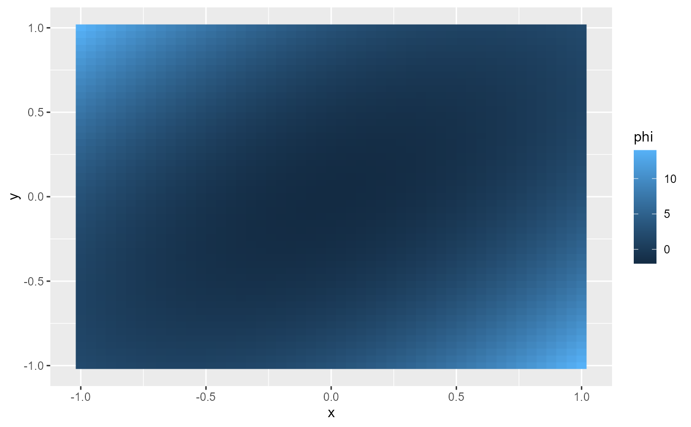

Compute and Plot Potential Function from a Conservative Vector Field
Source:R/geom_potential.R
geom_potential.Rdgeom_potential() adds a raster layer to a ggplot object, visualizing the
potential function derived from a conservative vector field. It computes the
potential numerically over a specified grid and displays it as a heatmap.
Usage
geom_potential(
mapping = NULL,
data = NULL,
stat = StatPotential,
position = "identity",
...,
na.rm = FALSE,
inherit.aes = TRUE,
show.legend = NA,
fun,
xlim = NULL,
ylim = NULL,
n = 51,
tol = 1e-06,
verify_conservative = FALSE
)
stat_potential(
mapping = NULL,
data = NULL,
geom = GeomPotential,
position = "identity",
...,
na.rm = FALSE,
inherit.aes = TRUE,
show.legend = NA,
fun,
xlim = NULL,
ylim = NULL,
n = 51,
tol = 1e-06,
verify_conservative = FALSE
)Arguments
- mapping
A set of aesthetic mappings created by
ggplot2::aes(). (Optional)- data
The data to be displayed in this layer. If
NULL, data is inherited from the plot.- stat
The statistical transformation to use on the data (default: StatPotential).
- position
Position adjustment, either as a string or the result of a position adjustment function.
- ...
Other arguments passed to
ggplot2::layer()and underlying methods.- na.rm
Logical. If
FALSE(default), missing values are removed with a warning.- inherit.aes
Logical. If
FALSE, overrides the default aesthetics rather than combining with them.- show.legend
Logical. Should this layer be included in the legends?
- fun
A function that takes a numeric vector of length 2 (
c(x, y)) and returns a numeric value, defining the conservative vector field. (Required)- xlim
Numeric vector of length 2 defining the domain limits on the x-axis. Defaults to
c(-1, 1).- ylim
Numeric vector of length 2 defining the domain limits on the y-axis. Defaults to
c(-1, 1).- n
Integer. Number of grid points along each axis for computing the potential. Defaults to
21.- tol
Numeric. Tolerance for verifying if the vector field is conservative. Defaults to
1e-6.- verify_conservative
Logical. If
TRUE, the function verifies that the provided vector field is conservative (i.e., that the mixed partial derivatives are equal within the specified tolerance). Defaults toFALSE.- geom
The geometric object used to render the potential function. Defaults to GeomPotential.
Details
Note: the potential is only known up to a constant. The point of reference
used is the lower left corner c(xlim[1], ylim[1]), where the potential is
assumed to be 0.
Aesthetics
geom_potential() accepts all aesthetics supported by
GeomRaster. In particular, the key aesthetics include:
fill: The computed potential value at each grid cell, which is mapped to a color scale.
xandy: The coordinates of the grid cell centers. (calculated)alpha: Controls the transparency of the raster fill.
Additional raster-specific aesthetics (e.g. those controlled by
scale_fill_gradient(), scale_fill_viridis_c(), etc.) can be applied to
modify the appearance of the potential heatmap.
Computed Variables
The following variable is computed internally by StatPotential during the potential function calculation:
- Potential
The scalar potential value computed numerically at each grid point. It represents the accumulated potential from a reference point (typically the lower bounds of
xlimandylim) to the given point. This value is mapped to thefillaesthetic in the raster layer.
Examples
scalar_field <- function(u){
x <- u[1]; y <- u[2]
(x + y)^2 + 4*(x - y)^2 - 8*(.5)^2
}
gradient_field <- function(u) numDeriv::grad(scalar_field, u)
s <- seq(-1, 1, length.out = 51)
expand.grid("x" = s, "y" = s) |>
transform(phi = apply(cbind(x, y), 1, scalar_field)) |>
ggplot(aes(x, y)) + geom_raster(aes(fill = phi))

ggplot() + geom_potential(fun = gradient_field)
ggplot() + geom_potential(fun = gradient_field, verify_conservative = TRUE)